ARMAS
Hay varias formas diferentes de dañar a tus mobs u otros jugadores en Minecraft. El tipo de arma más común es cuerpo a cuerpo, pero también puedes usar armas a distancia para mantener a tus atacantes a distancia.
Espadas
Las espadas son el arma principal en Minecraft. Son fáciles de fabricar y se pueden crear a partir de una variedad de materiales. Todas las espadas tienen una velocidad de ataque de 1,6 y un tiempo de recuperación de 0,625 segundos entre golpes.
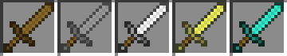Tipos de Espadas
De madera
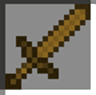- Daño de ataque (2 puntos por corazón): 4 puntos
- Daño por Segundo: 6.4
- Durabilidad: 60
De Oro
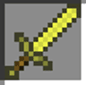- Daño de ataque (2 puntos por corazón): 4 puntos
- Daño por Segundo: 6.4
- Durabilidad: 33
De Piedra
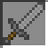- Daño de ataque (2 puntos por corazón): 5 puntos
- Daño por Segundo: 8
- Durabilidad: 132
De Hierro
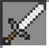- Daño de ataque (2 puntos por corazón): 6 puntos
- Daño por Segundo: 9.6
- Durabilidad: 251
De Diamante
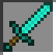- Daño de ataque (2 puntos por corazón): 7 puntos
- Daño por Segundo: 11.2
- Durabilidad: 1562
Hachas
Las hachas se usan en Minecraft para extraer árboles y otros objetos de madera de manera eficiente, sin embargo, también se pueden usar como armas. Su durabilidad y ataque se basan en los materiales de los que están hechos.

Tipos de Hachas
De madera
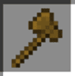- Daño de ataque (2 puntos por corazón): 7 puntos
- Daño por Segundo: 5.6
- Durabilidad: 60
De Oro
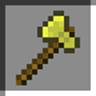- Daño de ataque (2 puntos por corazón): 7 puntos
- Daño por Segundo: 7
- Durabilidad: 33
De Piedra
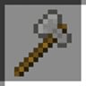- Daño de ataque (2 puntos por corazón): 9 puntos
- Daño por Segundo: 7.2
- Durabilidad: 132
De Hierro
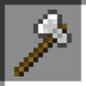- Daño de ataque (2 puntos por corazón): 9 puntos
- Daño por Segundo: 8.1
- Durabilidad: 251
De Diamante
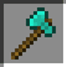- Daño de ataque (2 puntos por corazón): 9 puntos
- Daño por Segundo: 9
- Durabilidad: 1562
Arco y Flechas
Se requieren arcos y flechas si quieres atacar a distancia. Ambos pueden ser arrojados por los esqueletos cuando mueren, aunque los arcos casi siempre están dañados.
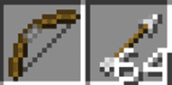Para atacar con un arco, necesitará flechas en algún lugar de su inventario. Puede hacer clic en el botón de ataque brevemente para disparar una flecha descargada. Esto causará 1 daño aunque la flecha solo viajará alrededor de 3 bloques. Cargarlo parte del camino hará que una flecha con 6 daños recorra 15 bloques. Una carga completa del disparo hará que una flecha viaje alrededor de 24 bloques y cause 9 daños. Cargar completamente el arco puede darte la oportunidad de hacer un golpe crítico con un daño completo de 10. Un jugador puede cargar completamente un arco haciendo clic y manteniendo presionado el botón de ataque hasta que la pantalla tiemble ligeramente.
Fabricacion de arco y flechas 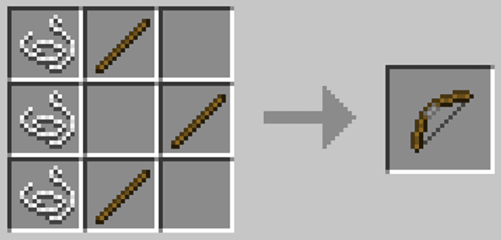 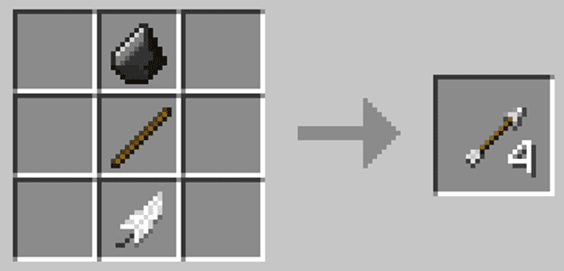
ARMADURAS
La armadura es esencial para todos los jugadores. Una vez que un jugador adquiere una armadura, puede viajar más lejos o más profundo y enfrentarse a muchos de los mobs del mundo. Cada jugador tiene 4 ranuras de armadura donde puede usar una armadura que lo protegerá de la mayoría de los daños, aunque no de daños por caídas.
Tipos de Armaduras
Cascos
Puedes fabricar un casco colocando 5 piezas del material deseado en una ‘u’ invertida en una mesa de trabajo. Una vez creado, puede colocar el casco en la ranura de la cabeza a la izquierda de la imagen de su personaje en la ventana de inventario.
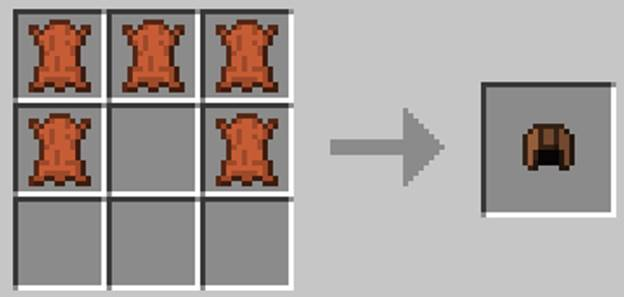- Aquí está la cantidad de durabilidad que tiene cada pieza por material:
- Cuero: 56
- Oro: 78
- Cadena/Hierro: 166
- Diamante: 364
Petos
Para hacer una coraza, necesitas 8 piezas del material que quieras usar. Coloque una pieza en cada bloque en la cuadrícula de la mesa de trabajo, excepto en el espacio central superior. Ese permanece vacío. Las placas de pecho ofrecen la mayor protección de todas las piezas de armadura, por lo que debes optar por esto primero cuando hagas una armadura, especialmente si estás luchando por encontrar suficiente material adecuado al principio.
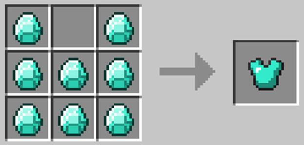- Según el material del que está hecho, aquí está la durabilidad de cada tipo de pieza de pecho:
- Cuero: 81
- Oro: 113
- Cadena/Hierro: 241
- Diamante: 529
Pantalon
Hacer leggins es como hacer cascos. Sin embargo, necesitarás 7 piezas en lugar de 5. Cree una ‘u’ invertida en la cuadrícula de la mesa de trabajo, dejando libres los espacios intermedios en las filas central e inferior, como si dibujara pantalones en la cuadrícula.
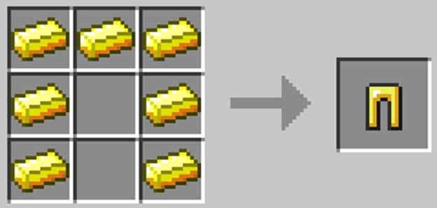- La durabilidad de cada tipo de pieza de pantalones:
- Cuero: 76
- Oro: 106
- Cadena/Hierro: 226
- Diamante: 496
Botas
Las botas solo llevan 4 piezas del material elegido. También le brindan la menor protección de todas las piezas, por lo que puede guardarlas para el final si es necesario. Usando una mesa de trabajo, puedes hacer botas colocando dos piezas de tu material en el lado izquierdo, una encima de la otra, y luego dos piezas en el lado derecho, niveladas con las dos primeras.
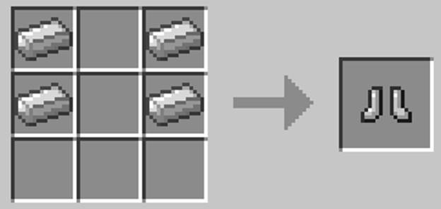- Según el material del que está hecho, aquí está la durabilidad de cada tipo de pieza de botas:
- Cuero: 66
- Oro: 92
- Cadena/Hierro: 196
- Diamante: 430
Escudo
Los escudos se colocan en la ranura de la mano izquierda, que se encuentra en el lado derecho del avatar de tu personaje en la pantalla de inventario. Se puede usar un escudo haciendo clic en el botón de acción cuando tiene un elemento sin una acción de ‘usar’ seleccionada en su barra de acceso rápido. Los elementos sin una acción de ‘uso’ incluyen espadas, hachas, picos, etc.